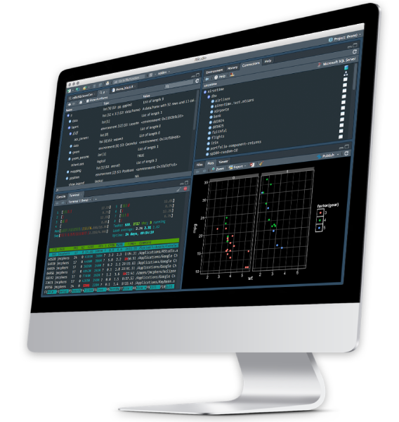

| Característica | Global, N = 2341 | Mujer, N = 941 | Hombre, N = 1401 | p-valor2 |
|---|---|---|---|---|
| Prematuridad (semanas) | 0.964 | |||
| 0 | 184.0 (78.6%) | 74.0 (78.7%) | 110.0 (78.6%) | |
| 1 | 10.0 (4.3%) | 5.0 (5.3%) | 5.0 (3.6%) | |
| 2 | 7.0 (3.0%) | 3.0 (3.2%) | 4.0 (2.9%) | |
| 3 | 9.0 (3.8%) | 2.0 (2.1%) | 7.0 (5.0%) | |
| 4 | 8.0 (3.4%) | 3.0 (3.2%) | 5.0 (3.6%) | |
| 5 | 9.0 (3.8%) | 4.0 (4.3%) | 5.0 (3.6%) | |
| 6 | 3.0 (1.3%) | 1.0 (1.1%) | 2.0 (1.4%) | |
| 8 | 2.0 (0.9%) | 1.0 (1.1%) | 1.0 (0.7%) | |
| 14 | 2.0 (0.9%) | 1.0 (1.1%) | 1.0 (0.7%) | |
| Edad cronológica | 8.0 (4.0, 17.0) | 9.0 (4.0, 17.0) | 7.0 (4.0, 17.0) | 0.741 |
| Edad corregida | 8.0 (3.2, 17.0) | 9.0 (4.0, 16.8) | 7.0 (3.0, 17.0) | 0.709 |
| Puntaje CM | 40.0 (30.0, 50.0) | 45.0 (31.2, 55.0) | 40.0 (25.0, 50.0) | 0.108 |
| Puntaje GM | 40.0 (25.0, 50.0) | 40.0 (25.0, 50.0) | 40.0 (20.0, 50.0) | 0.766 |
| Puntaje FM | 40.0 (30.0, 50.0) | 40.0 (30.0, 50.0) | 40.0 (30.0, 50.0) | 0.397 |
| Puntaje CG | 40.0 (30.0, 50.0) | 40.0 (30.0, 50.0) | 40.0 (30.0, 50.0) | 0.36 |
| Puntaje PS | 45.0 (35.0, 50.0) | 45.0 (36.2, 50.0) | 40.0 (33.8, 50.0) | 0.416 |
| 1 n (%); Mediana (RIQ) | ||||
| 2 Prueba de la suma de rangos de Wilcoxon | ||||
Descripción y caracterización del neurodesarrollo de niños con hipotonía congénita
de la región de Magallanes y la Antártica Chilena
Matías Castillo-Aguilar 1,2
1 Departamento de Kinesiología, Universidad de Magallanes, Punta Arenas, Chile.
2 Neurofisiología Integrativa Molecular Austral Chilena (NIM-ACh), Punta Arenas, Chile.
Conceptualización
Entendiendo la problemática
Los signos físicos y psicológicos del desarrollo en la primera infancia son marcadores representativos y pertinentes para identificar y controlar el crecimiento general en los primeros años de vida (Di Rosa et al. 2016).
Múltiples afecciones neuromusculares, metabólicas y genéticas se han asociado a un neurodesarrollo variable en infantes.
En donde la disminución del tono muscular puede representar un signo de retraso en el desarrollo neurológico del niño, que puede predisponer a una peor función cognitiva en algunos casos (Riou et al. 2009).
Lo motor y lo cognitivo van de la mano
Existe evidencia que sugiere que las habilidades motoras gruesas y finas podrían tener un papel para predecir el normal desarrollo de habilidades comunicativas (Gonzalez, Alvarez, and Nelson 2019).
Esto pone sobre la mesa, la necesidad de tener estrategias de monitorización para favorecer la derivación y atención temprana.
Hipotonía, un signo pasado por alto
La hipotonía tiende a generar alteraciones que dificultan el desarrollo psicomotor adecuado, pudiendo generar retrasos en futuras capacidades neuromotrices (Gabis et al. 2021).
Existen múltiples causas de hipotonía, pero cuando esta se encuentra presente en ausencia de otros signos o síntomas entonces hablamos hipotonía congénita (HC) (Leyenaar, Camfield, and Camfield 2005).
Investigar el desarrollo de la HC es fundamental, dado que es un desorden neuromuscular no progresivo que tiende a mejorar con la intervención temprana.
NO HAY SUFICIENTE
EVIDENCIA
Hipótesis y Objetivos
Hipótesis
Los niños con hipotonía congénita presentan características diferentes en su neurodesarrollo de acuerdo a su edad.
Objetivos
General
Describir y caracterizar el neurodesarrollo de niños con HC de la región de Magallanes y la Antártica Chilena.
Específicos
- Describir y caracterizar la relación entre el neurodesarrollo y la prematuridad en niños diagnosticados de HC.
- Describir y caracterizar la relación entre el neurodesarrollo y la edad en niños diagnosticados de HC.
- Describir y caracterizar la influencia de la edad sobre el riesgo de presentar un retardo en el neurodesarrollo en niños diagnosticados de HC.
Métodos
¿Cómo abordamos este problema?
Diseño del estudio
Realizamos un estudio observacional.
Corte transversal.
Paradigma cuantitativo.
Participantes
Un total de 234 usuarios con diagnostico de HC fueron incluídos como parte de un programa de intervención llevado a cabo por el Centro de Rehabilitación Cruz del Sur (CRCS) de Punta Arenas, Chile.
El diagnóstico de HC se basó en 4 fuentes:
- Pediatra de atención primaria.
- Pediatras de clínicas privadas.
- Neuropediatra del Hospital Clínico.
- Fisiatra de la institución.
Una vez hecho el diagnóstico, este se refirió al programa de la institución para su posterior ingreso.
Resguardos éticos
Los cuidadores legales otorgaron su consentimiento informado antes de la participación a este estudio.
El Comité de Ética del CRCS aprobó este estudio siguiendo las regulaciones establecidas por la Declaración de Helsinki.
Mediciones
The Ages and Stages Questionnaire (ASQ-3)
- Instrumento de cribado del desarrollo de nivel inicial informado por los padres.
- Consta de 21 intervalos, cada uno con 30 ítems en cinco áreas.
Dominios del desarrollo:
- Comunicación (CM)
- Habilidades motoras gruesas (GM)
- Habilidades motoras finas (FM)
- Resolución de problemas (CG)
- Personal-social (PS)
Es costo efectivo y ampliamente usado internacionalmente (Heo, Squires, and Yovanoff 2008; Sarmiento Campos, Squires, and Ponte 2011).
Validado en infantes de término y pretérmino chilenos (75% sensibilidad and 81% especificidad) (Schonhaut et al. 2013).
Procedimientos
- Los datos sociodemográficos se obtuvieron de la base de datos electrónica de la institución.
- El ASQ-3 lo aplicó la enfermera del programa de acuerdo al protocolo establecido por el propio instrumento.
Algunas consideraciones importantes de la administración son que:
- Debe responder el cuidador principal.
- En caso de dudas del cuidador sobre el comportamiento evaluado, la información se corrobora mediante pruebas in-situ con el usuario.
Análisis estadístico
Software estadístico


Análisis exploratorio
Gráficos de densidad univariada. Las líneas rojas representan la media, y las azules la mediana.
# En R, podemos evaluarlo así:
dataset[, list(
CM = shapiro_test(comunicacion_total),
GM = shapiro_test(motora_gruesa_total),
FM = shapiro_test(motora_fina_total),
CG = shapiro_test(resolucion_problemas_total),
PS = shapiro_test(socio_individual_total)
)] CM GM FM CG PS
1: p < 0.001 p < 0.001 p < 0.001 p < 0.001 p < 0.001De acuerdo a lo anterior, no podemos asumir la normalidad de las variables.
Estadísticos
Descriptivos
- Variables numéricas: mediana y rango intercuartílico (estimadores robustos de centralidad y dispersión).
- Variables discretas: frecuencia absoluta y relativa.
Comparaciones
- La prueba de suma de rangos de Wilcoxon para comparar puntajes del ASQ-3 entre hombres y mujeres.
- La prueba chi-cuadrado ( \(\chi^2\)) se usó para comparar la bondad de ajuste.
Modelado con GAMs
- Empleamos modelos aditivos generalizados (GAMs) para describir el comportamiento del neurodesarrollo en respuesta de nuestros parámetros de interés.
- Permite modelar relaciones no lineales de alta dimensionalidad, pudiendo describir efectos complejos.
Paradoja de simpson
Sumado a lo anterior, también podemos controlar por la influencia de otras variables para obtener estimaciones más robustas a factores de confusión.
Para describir las estimaciones de los modelos usaremos derivadas aproximadas de primer orden con intervalos de confianza al 95%, con el fin de poder describir los efectos observados en términos de segmentos quasi-lineales (Makowski et al. 2020).
Efectos aleatorios
Para evaluar la influencia de las variables de confusión, ajustamos diferentes modelos con efectos aleatorios en forma de términos paramétricos penalizados. (Wood et al. 2016).
Se usaron las siguientes variables:
- Sexo del lactante.
- ID del clínico.
- Relación del lactante con el encuestado.

Resultados
¿Qué fué lo que se encontró?
Características de la muestra
NEURODESARROLLO
Y PREMATURIDAD
| Variable | Estadístico |
|---|---|
| CM | \(F_{smooth}\) (1, 228.2) = 0.22, p = 0.639 |
| FM | \(F_{smooth}\) (1, 229.99) = 0.01, p = 0.918 |
| GM | \(F_{smooth}\) (1, 230.69) = 0.95, p = 0.33 |
| CG | \(F_{smooth}\) (1, 230.99) = 0.98, p = 0.323 |
| PS | \(F_{smooth}\) (1, 230.43) = 2.07, p = 0.152 |
Tabla 1. Significancia de los términos no-lineales para la prematurez sobre las variables del desarrollo. Se presentan los modelos ajustados por las variables de confusión previamente descritas.
NEURODESARROLLO
Y LA EDAD
| Variable | Estadístico |
|---|---|
| CM | \(F_{smooth}\) (5.1, 224.74) = 13.88, p < 0.001 |
| FM | \(F_{smooth}\) (2.56, 228.03) = 4.11, p = 0.006 |
| GM | \(F_{smooth}\) (5.25, 226.82) = 5.6, p < 0.001 |
| CG | \(F_{smooth}\) (5.69, 225.93) = 3.7, p = 0.001 |
| PS | \(F_{smooth}\) (1, 230.4) = 1.06, p = 0.304 |
Tabla 2. Significancia de los términos no-lineales para la edad corregida (meses) sobre las variables del desarrollo. Se presentan los modelos ajustados por las variables de confusión previamente descritas.
| Inicio | Termino | Estadístico |
|---|---|---|
| 7.3 | 17.9 | \(\beta\) = -2.07, CI95%[-3.12, -1.01], \(t_{student}\) (224.74) = -3.89, p = 0.004 |
| Inicio | Termino | Estadístico |
|---|---|---|
| 0.0 | 6.8 | \(\beta\) = -3.02, CI95%[-4.63, -1.42], \(t_{student}\) (226.82) = -3.81, p = 0.003 |
| 10.2 | 15.5 | \(\beta\) = 1.83, CI95%[0.57, 3.08], \(t_{student}\) (226.82) = 2.87, p = 0.008 |
| Inicio | Termino | Estadístico |
|---|---|---|
| 22.3 | 37.3 | \(\beta\) = -0.75, CI95%[-1.4, -0.11], \(t_{student}\) (228.03) = -2.32, p = 0.023 |
| Inicio | Termino | Estadístico |
|---|---|---|
| 0.0 | 5.8 | \(\beta\) = 2.8, CI95%[1.17, 4.43], \(t_{student}\) (225.93) = 3.48, p = 0.002 |
| 9.2 | 14.1 | \(\beta\) = -1.64, CI95%[-2.86, -0.41], \(t_{student}\) (225.93) = -2.62, p = 0.014 |
EDAD
Y RETRASO DEL DESARROLLO
| Variable | Estadístico |
|---|---|
| CM | \(\chi^2_{smooth}\) (4.85) = 27.73, p < 0.001 |
| GM | \(\chi^2_{smooth}\) (1) = 6.87, p = 0.009 |
| FM | \(\chi^2_{smooth}\) (1) = 0.45, p = 0.502 |
| CG | \(\chi^2_{smooth}\) (2.88) = 5.15, p = 0.168 |
| PS | \(\chi^2_{smooth}\) (2.13) = 1.52, p = 0.567 |
Tabla 7. Significancia de los términos no-lineales logísticos para la edad corregida (meses) sobre las variables del desarrollo. Se presentan los modelos ajustados por las variables de confusión previamente descritas.
| Inicio | Termino | Estadístico |
|---|---|---|
| 13.6 | 18.9 | OR = 1.6, CI95%[1.16, 2.22], \(t_{student}\) (224.56) = 2.89, p = 0.01 |
| 29.1 | 29.1 | OR = 1.36, CI95%[1, 1.86], \(t_{student}\) (224.56) = 1.98, p = 0.049 |
| Estadístico |
|---|
| OR = 0.96, CI95%[0.93, 0.99], \(t_{student}\) (232) = -2.62, p = 0.009 |
| Estadístico |
|---|
| OR = 1, CI95%[0.86, 1.15], \(t_{student}\) (226.36) = -0.16, p = 0.591 |
| Estadístico |
|---|
| OR = 1.01, CI95%[0.93, 1.11], \(t_{student}\) (229.85) = 0.2, p = 0.346 |
| Estadístico |
|---|
| OR = 1.01, CI95%[0.91, 1.13], \(t_{student}\) (229.2) = 0.24, p = 0.566 |
Conclusión
- Se observan marcadas variaciones en los rasgos del neurodesarrollo a lo largo de la edad en los infantes hipotónicos, principalmente en forma de variaciones no lineales y de dominio específico.
- Mostramos que las variaciones observadas en los dominios del desarrollo no son atribuibles únicamente a la prematuridad, donde la edad corregida explica mejor la variabilidad observada en el neurodesarrollo.
Futuras investigaciones podrían determinar cómo se aplican estos resultados cuando se controlan los factores sociales mediados por el contexto, así como otras poblaciones clínicas.
Referencias
Matías Castillo-Aguilar
Di Rosa, Gabriella, Tiziana Cavallaro, Angela Alibrandi, Lucia Marseglia, Marco Lamberti, Elisa Giaimo, Antonio Nicotera, Maria Bonsignore, and Antonella Gagliano. 2016. “Predictive Role of Early Milestones-Related Psychomotor Profiles and Long-Term Neurodevelopmental Pitfalls in Preterm Infants.” Early Human Development 101: 49–55.
Gabis, Lidia V, Meirav Shaham, Odelia Leon Attia, Shahar Shefer, Ruth Rosenan, Tal Gabis, and Michal Daloya. 2021. “The Weak Link: Hypotonia in Infancy and Autism Early Identification.” Frontiers in Neurology 12: 612674.
Gonzalez, Sandy L, Veronica Alvarez, and Eliza L Nelson. 2019. “Do Gross and Fine Motor Skills Differentially Contribute to Language Outcomes? A Systematic Review.” Frontiers in Psychology 10: 2670.
Heo, Kay H, Jane Squires, and Paul Yovanoff. 2008. “Cross-Cultural Adaptation of a Pre-School Screening Instrument: Comparison of Korean and US Populations.” Journal of Intellectual Disability Research 52 (3): 195–206.
Leyenaar, JoAnna, Peter Camfield, and Carol Camfield. 2005. “A Schematic Approach to Hypotonia in Infancy.” Paediatrics & Child Health 10 (7): 397–400.
Makowski, Dominique, Mattan S. Ben-Shachar, Indrajeet Patil, and Daniel Lüdecke. 2020. “Estimation of Model-Based Predictions, Contrasts and Means.” CRAN. https://github.com/easystats/modelbased.
Riou, Emilie M, Shuvo Ghosh, Emmett Francoeur, and Michael I Shevell. 2009. “Global Developmental Delay and Its Relationship to Cognitive Skills.” Developmental Medicine & Child Neurology 51 (8): 600–606.
Sarmiento Campos, José A, Jane Squires, and Jaime Ponte. 2011. “Universal Developmental Screening: Preliminary Studies in Galicia, Spain.” Early Child Development and Care 181 (4): 475–85.
Schonhaut, Luisa, Iván Armijo, Marianne Schönstedt, Jorge Alvarez, and Miguel Cordero. 2013. “Validity of the Ages and Stages Questionnaires in Term and Preterm Infants.” Pediatrics 131 (5): e1468–74.
Wood, Simon N., N., Pya, and B. S"afken. 2016. “Smoothing Parameter and Model Selection for General Smooth Models (with Discussion).” Journal of the American Statistical Association 111: 1548–75.